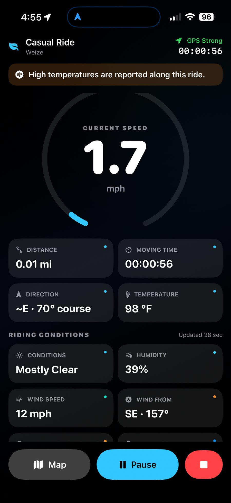
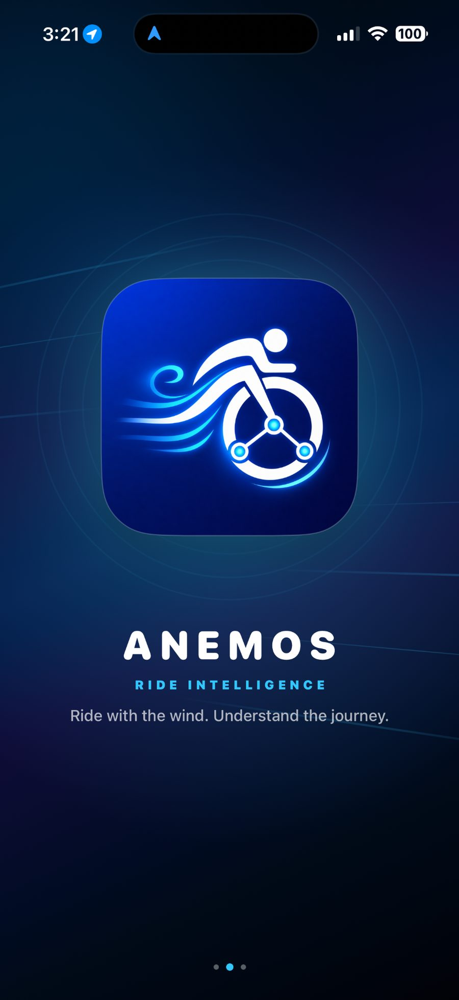
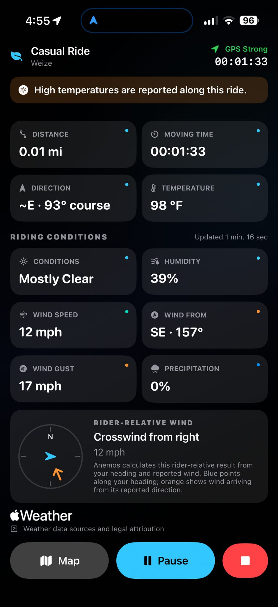
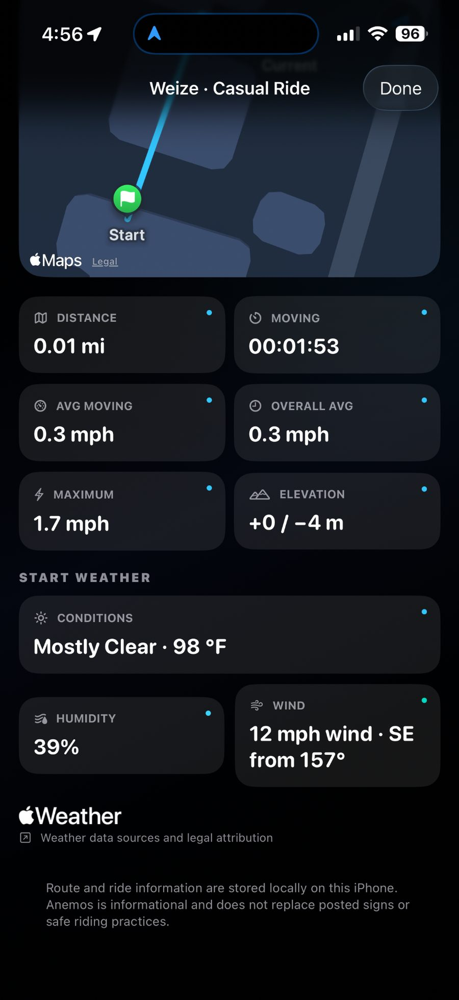
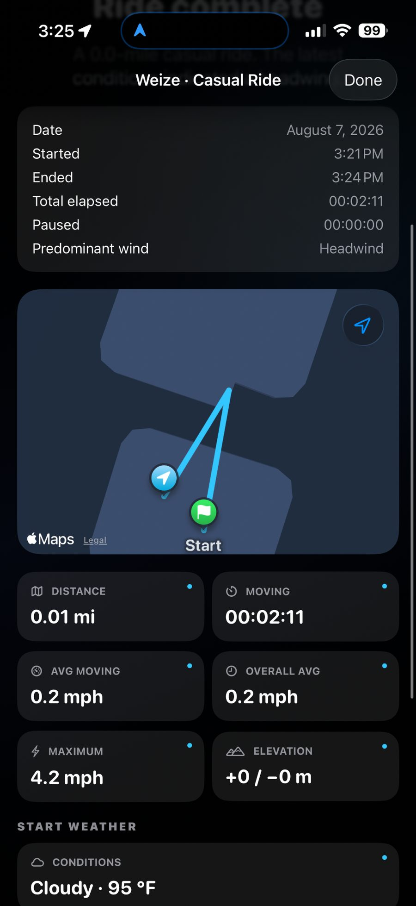

⌖
GPS cycling metrics
Track live speed, distance, moving time, average speed, maximum speed, route, direction, and elevation estimates.
Anemos turns every cycling ride into a clearer picture of speed, distance, route, elevation, weather, and wind. Built for iPhone with an Apple Watch companion and Apple Health integration.


Anemos combines ride metrics, environmental context, and local history so you can understand what happened on the road without handing your ride history to a developer backend.
Track live speed, distance, moving time, average speed, maximum speed, route, direction, and elevation estimates.
Apple WeatherKit provides current conditions, temperature, humidity, wind, gusts, precipitation probability, and available weather alerts.
Anemos combines your travel direction with reported wind to describe headwind, tailwind, and crosswind conditions from the rider's point of view.
With permission, completed rides can be written to Apple Health as cycling workouts with distance, estimated active energy, and workout route when available.
Keep key ride context on your wrist and record authorized Apple Watch Fall Detection events associated with an active ride.
If an unfinished ride is detected after relaunch, Anemos can resume it, recover and save the recorded portion, or discard it. The app does not invent route segments while it was not running.
Live riding, WeatherKit context, route history, and post-ride review stay visually grounded in the same dark, glanceable interface.



The Apple Watch companion can record Apple-authorized Fall Detection events during an active ride and transfer event context to the paired iPhone.
Ride history and precise routes remain local to your device. Anemos has no Longoria Apps account system, advertising stack, analytics backend, telemetry service, or CloudKit synchronization for ride data.
iPhone + Apple Watch. One focused cycling companion for ride metrics, weather, history, and safety context.